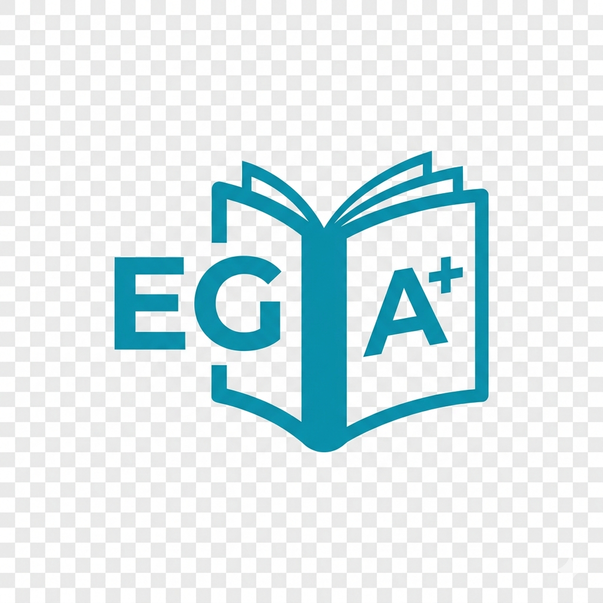

An offline-first application that helps teachers compute CBC rubrics, generate merit lists, and produce professional PDF & Excel reports.
Download Latest VersionVersion 1.0.0 • Fully Offline • Free for Teachers

Designed specifically for the Kenyan Competency-Based Curriculum
Automatic grading using official CBC indicators and competencies. Supports both Primary and Junior School.
Generate print-ready merit lists and progress reports with school branding and color-coded grades.
Clean, well-formatted spreadsheets for school records and analysis.
Offline First
Works without internet
Free
For all Kenyan teachers
CBC Focused
Primary & Junior School